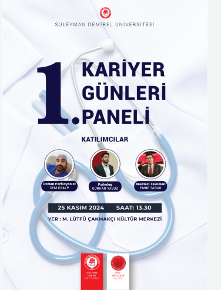

Kariyer Günleri 2026

Etkinlik Künyesi
- Tarih
- Yer
- A Blok Konferans Salonu
- Kategori
- Seminer
- Kontenjan
- 120
Ayrıntılı Açıklama
Sektör temsilcilerinin katılımıyla gerçekleştirilecek bu etkinlikte, CV hazırlama teknikleri, mülakat simülasyonları ve teknoloji sektöründeki kariyer fırsatları ele alınacaktır.